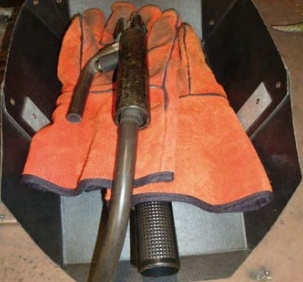
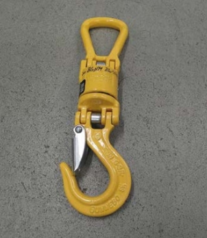
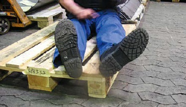
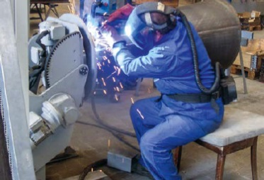
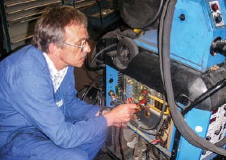

Personen, die Schweißeinrichtungen betreiben, sind verantwortlich für:
Wenn Schweißstromquellen zusammengeschaltet werden sollen, weil beispielsweise mit mehreren Schweißstromquellen an einem Werkstück oder an leitfähig verbundenen Werkstücken gearbeitet wird, muss durch eine geeignete Person geprüft werden, ob diese für ein Zusammenschalten geeignet sind und ob die zulässige Leerlaufspannung nicht überschritten wird. Die einzelnen Schweißstromquellen müssen auf die gleiche Stromstärke eingestellt werden, damit keine Stromquelle überlastet wird. Eine Reihenschaltung von Schweißstromquellen ist unzulässig, weil sich dann die Leerlaufspannungen addieren und der zulässige Höchstwert überschritten wird. Um irrtümliche Reihenschaltung oder Kurzschluss zu erkennen, muss vor der Inbetriebnahme die Leerlaufspannung kontrolliert werden (siehe auch Abschnitt 3.2.5).
Geeignete Personen sind:
Schweißstromquellen, die in trockenen Bereichen eingesetzt werden, müssen mindestens der Schutzart IP 21 entsprechen, ungeschützt im Freien eingesetzte Stromquellen mindestens der Schutzart IP 23. Für wechselnden Einsatz empfiehlt sich von vornherein die höhere Schutzart.
Für Schweißstromquellen ist eine Ausführung in der Schutzklasse I (mit Schutzleiter) oder in Schutzklasse II (Schutzisolierung ohne Schutzleiter) geeignet. Es empfiehlt sich die Schutzklasse II, da die Netzzuleitung keinen Schutzleiter enthält, der durch vagabundierende Schweißströme zerstört werden könnte. Vagabundierende Schweißströme können auftreten, wenn Werkstückaufnahmen oder Werkstücke geerdet sind. Schematische Darstellungen der Gerätekonstellationen sind in Abschnitt 3.2.4 näher beschrieben. Schweißvorrichtungen sind häufig über ihre Antriebsmotoren mit dem Schutzleiter verbunden (Schutzklasse I).
Zum ordnungsgemäßen Umgang mit Schweißstromquellen gehört es, die Stromquelle erst einzuschalten, nachdem alle Anschlüsse im Schweißstromkreis hergestellt sind, und diese abzuschalten, bevor die Anschlüsse im Schweißstromkreis getrennt werden. Dadurch wird vermieden, dass unbeabsichtigt ein Lichtbogen entstehen kann. Im Gefahrfall muss es möglich sein, den Stabelektrodenhalter oder Schweißbrenner schnell spannungsfrei zu machen. Dazu kann z. B. ein Schalter in der Schweißstromquelle oder eine Steckvorrichtung in der Schweißleitung zum Stabelektrodenhalter dienen, soweit sie in der Nähe der Schweißstelle leicht erreichbar sind.
Schweißleitungsanschlüsse und -verbinder müssen lösbar und gegen unbeabsichtigtes Lösen gesichert sein. Bei angeschlossener Schweißleitung muss ein vollständiger Schutz gegen direktes Berühren wirksam sein. Ohne angeschlossene Schweißleitung ist nur ein Schutz gegen zufälliges Berühren erforderlich. Schweißstromrückleitungsanschlüsse am Werkstück oder an der Werkstückaufnahme erfordern keinen Berührungsschutz.
Die Schweißstromrückleitung muss übersichtlich geführt sein und gut leitend am Werkstück oder an der Werkstückaufnahme angeschlossen werden. Der Anschluss sollte direkt und so nah wie möglich an der Schweißposition erfolgen. Werkstückfremde Stahlkonstruktionen, Gleise, Rohrleitungen, Stangen u. Ä. dürfen nicht zur Rückleitung des Schweißstromes verwendet werden. Das Verbinden von mehreren Schweißtischen oder Werkzeugaufnahmen mit der Absicht, nach Anschluss der Schweißstromrückleitung an jeder Stelle schweißen zu können, ist unzulässig, denn dadurch wird die Gefahr vagabundierender Schweißströme vergrößert. Wenn die Notwendigkeit besteht, mit einer Schweißstromquelle an verschiedenen Schweißtischen oder Werkstückaufnahmen zu schweißen, empfiehlt es sich, für den Anschluss der Schweißstromrückleitung Steckverbindungen vorzusehen. Folgendes ist beim Anschließen der Schweißstromrückleitung zu berücksichtigen:
Vor Schweißbeginn muss sich die Schweißerin beziehungsweise der Schweißer vom einwandfreien Anschluss der Schweißstromrückleitung überzeugen. Dies ist besonders wichtig, wenn der Stromverlauf bei großen Schweißbauteilen oder Werkstücken unübersichtlich ist. Wird an Werkstücken elektrisch geschweißt und gleichzeitig an ihnen mit Elektrowerkzeugen gearbeitet, werden schutzisolierte Werkzeuge (Schutzklasse II, ohne Schutzleiter) empfohlen (siehe Abb. 4-1).
Abb. 4-1 Symbol für die Kennzeichnung von schutzisoliertem Elektrowerkzeug
Stabelektrodenhalter müssen immer isoliert abgelegt werden. Eine sinnvolle und einfache Maßnahme, dieses Ziel zu erreichen, besteht schon darin, den Elektrodenhalter erst nach Entfernen des Elektrodenrestes abzulegen (siehe Abb. 4-2). Die Isolierstücke (Halbschalen) der Stabelektrodenhalter müssen deshalb bei Beschädigung sofort ausgetauscht werden.

Abb. 4-2 Ohne Elektrodenrest isoliert abgelegter Stabelektrodenhalter
Lichtbogenzündversuche an nicht dafür vorgesehenen Teilen sind unzulässig, denn sie können vagabundierende Schweißströme hervorrufen und z. B. Schutzleiter zerstören. Müssen ausnahmsweise Werkstücke am Kran hängend geschweißt werden, ist das Werkstück sorgfältig vom Kranhaken zu isolieren, um eine mögliche Beschädigung der Kranseile zu verhindern. Dazu genügt z. B. schon ein trockenes Hanf- oder Kunstfaserseil als Anschlagmittel oder ein Isolierwirbel (siehe Abb. 4-3). Unfälle mit Personenaufnahmemitteln haben gezeigt, dass durch vagabundierende Schweißströme die dünnen Stahlseile sehr schnell durchbrennen können, sodass die Personenaufnahmemittel abstürzen. Deshalb müssen beim Schweißen von Personenaufnahmemitteln folgende Vorkehrungen getroffen werden:

Abb. 4-3 Isolierwirbel
Standsicherheit
Schweißstromquellen, Gasflaschen und Drahtvorschubgeräte müssen standsicher aufgestellt werden. Auf geneigtem Untergrund müssen sie gegebenenfalls zusätzlich gegen Umstürzen gesichert werden.
Betriebsanleitung, Betriebsanweisung
Jede Schweißstromquelle muss mit einer Betriebsanleitung ausgeliefert werden. Darin sind wichtige Hinweise für sicheres und gesundes Arbeiten enthalten. Je nach Art der auszuführenden Schweißarbeiten und Arbeitsbedingungen ist in der Regel eine schriftliche Betriebsanweisung zu erstellen. Betriebsanweisungen sind in jedem Falle bei besonderen Gefahren, z. B. Arbeiten in engen Räumen, an Behältern mit gefährlichem Inhalt, bei erhöhter elektrischer Gefährdung und Unterwasserschweiß- und Unterwasserschneidarbeiten erforderlich.
Da nicht alle aktiven Teile des Schweißstromkreises gegen direktes Berühren geschützt werden können, sind zusätzliche Schutzmaßnahmen erforderlich. Eine ausreichende Isolation der Person beim Lichtbogenschweißen, z. B. durch isolierende Unterlage, geeignete Handschuhe und Schuhwerk, ist der beste Schutz gegen eine elektrische Durchströmung. Die Benutzung geeigneter persönlicher Schutzausrüstung ist dabei für die Isolation der Schweißfachkraft entscheidend.
Am sichersten lassen sich isolieren:

Abb. 4-4 Nur unbeschädigtes trockenes Schuhwerk mit Gummisohle isoliert ausreichend.
Metallteile in Handschuhen, z. B. Nieten oder Klammern, heben die isolierende Wirkung von Handschuhmaterialien auf. Sie sind deshalb in Schutzhandschuhen für das Schweißen nicht zulässig. Produkte, die der DIN EN 12477 entsprechen, erfüllen die elektrischen Isolationsanforderungen nicht zwangsläufig, da die Norm keinerlei Anforderungen an das elektrische Isolationsvermögen enthält. Aber auch dann, wenn die Norm erfüllt ist, gewährleisten die Materialeigenschaften der Handschuhe nicht, schweißwarme Teile ungefährdet kurzzeitig berühren oder sogar anfassen zu können.
Vorsicht mit Schutzhandschuhen für das Schweißen nach DIN EN 12477. Denn obwohl diese ein CE Zeichen tragen, müssen sie nicht für das Lichtbogenschweißen geeignet sein!
Nähere Informationen über die Einsatzmöglichkeiten von Handschuhen liefern Prüfbescheinigungen von akkreditierten Prüfstellen und Produktinformationen der Herstellfirma.
Ein kritischer Teil der Isolation ist der Arbeitsanzug, denn er wird schnell durchfeuchtet oder durchschwitzt und damit leitfähig. Deshalb müssen Stabelektrodenhalter und Schweißbrenner so gehalten werden, dass kein Strom durch den menschlichen Körper fließen kann.
Daher: Elektrodenhalter oder Schweißbrenner bei Schweißunterbrechung niemals unter den Arm klemmen.
Stabelektroden dürfen nur mit trockenen Schutzhandschuhen gewechselt werden, denn gerade im Leerlauf ist die Gefährdung durch die Schweißspannung am größten, da sie als Leerlaufspannung ihren höchsten Wert erreicht.
Drahtelektroden dürfen nur spannungsfrei gewechselt werden.
Auch bei den Sitzgelegenheiten für das Lichtbogenschweißen muss darauf geachtet werden, dass keine leitfähige Verbindung von der schweißenden Person zum Werkstück besteht, z. B. durch einen Stuhl mit Metallgestell (siehe Abb. 4-5). Sind einzelne Körperteile nicht ausreichend isoliert, müssen sie durch isolierende Unterlagen oder Zwischenlagen geschützt werden.

Abb. 4-5 Mit oder ohne Auflage – trockenes Holz isoliert beim Lichtbogenschweißen
Von der Herstellfirma vorgeschriebene Reinigungs- und Wartungsarbeiten dürfen nicht unterlassen werden. In der Schweißstromquelle nützt die beste Isolierung nichts, wenn sie durch Ablagerung leitfähigen Staubes überbrückt wird!
Obwohl Schweißfachkräfte mit dem Schweißstrom direkt umgehen, sind sie dennoch keine Elektrofachkräfte. Mängel auf der Netzseite der Schweißstromquelle haben sie an ihre Vorgesetzten zu melden und dürfen sie nicht selbst beheben. Arbeiten in diesem Bereich dürfen nur von Elektrofachkräften ausgeführt werden. Einrichtungen für Lichtbogenverfahren dürfen nur mit geeigneten Ersatzteilen instandgesetzt werden.
Wird an einer Schweißleitung ein Isolationsschaden entdeckt, muss die schweißende Person sofort für den Ersatz durch eine einwandfreie Leitung sorgen. Das Instandsetzen von Schweißleitungen ist nur zulässig, wenn die ursprünglichen Isolationseigenschaften wiederhergestellt werden. Isolierband ist für diesen Zweck ungeeignet. Das macht ein Vergleich der Dicke von Leitungsisolationen (meistens mehrere Millimeter) mit der Dicke eines Isolierbandes (in der Regel wenige hundertstel Millimeter) deutlich. Beschädigte Isolierstoffe von Stabelektrodenhaltern und Schweißbrennern müssen sofort durch einwandfreie Teile ersetzt werden. Arbeiten am Stabelektrodenhalter oder Schweißbrenner sind nur im spannungsfreien Zustand zulässig. Für den Austausch von Verschleißteilen können – nach besonderer Unterweisung – auch Schweißer und Schweißerinnen selbst befähigt werden. Geeignete Ersatzteile müssen zur Verfügung stehen.

Abb. 4-6 Arbeiten an einer Schweißstromquelle nur durch Elektrofachkraft zulässig
Die Schweißgeräte sind wiederkehrend auf ihre elektrische Sicherheit nach TRBS 1201 zu prüfen. Die Prüfungen dürfen nur von befähigten Personen nach TRBS 1203 durchgeführt werden. Nur eine befähigte Person kann aufgrund ihrer Fachkenntnisse aus Berufsausbildung, Berufserfahrung und zeitnaher beruflicher Tätigkeit das erforderliche Verständnis für sicherheitstechnische Belange aufbringen und dafür sorgen, dass Prüfungen ordnungsgemäß durchgeführt werden können.
Bei der Bemessung der Prüffristen für Einrichtungen der Lichtbogentechnik muss die befähigte Person folgende Punkte berücksichtigen:
Nach Tabelle 2 der TRBS 1201 gelten für elektrische Einrichtungen der Schweißtechnik folgende Prüffristen (bewährte Richtwerte):
Es soll dabei die Prüfung der elektrischen Schutzmaßnahmen entsprechend normativer Vorgaben in Verbindung mit einer Reinigung des Geräteinneren durchgeführt werden. Die Prüfung der Wirksamkeit der Schutzmaßnahme gegen gefährliche Körperströme umfasst z. B. die Messung des Schutzleiterwiderstandes nach DIN EN 60974-4 "Lichtbogenschweißeinrichtungen", Teil 4 "Sicherheit, Instandhaltung und Prüfung von Lichtbogenschweißeinrichtungen im Betrieb".
Es dürfen nur geeignete Prüfgeräte verwendet werden, die insbesondere den Normen der DIN EN 61557-Serie genügen. Die Ergebnisse der Prüfungen sind zu dokumentieren.